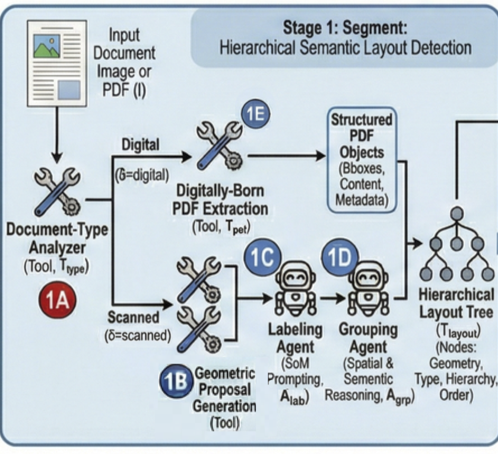
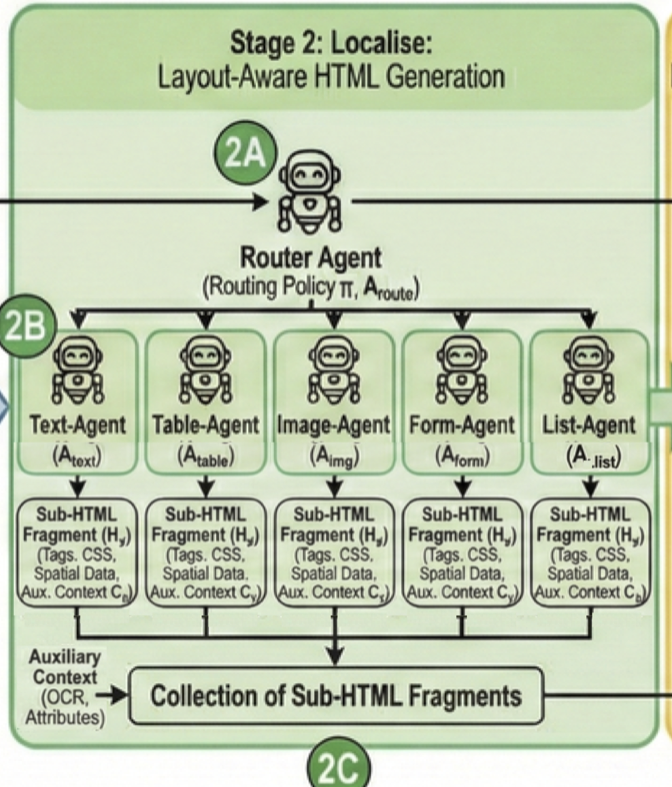
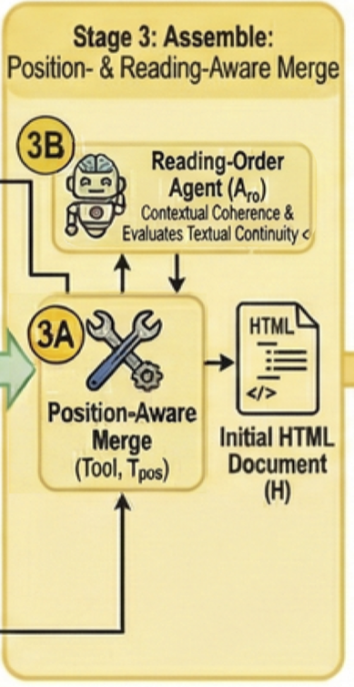
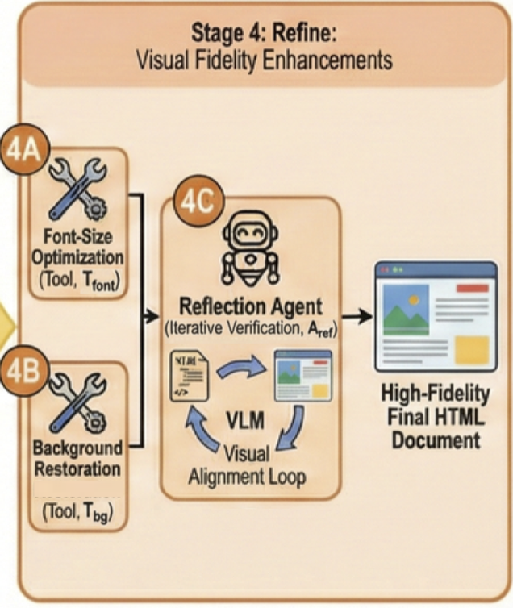
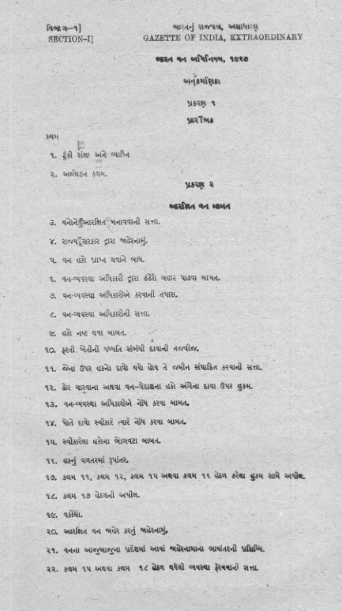

REPLICA
Visually Faithful Document Reconstruction
Aryan Jain2, Sahithi Kukkala2, Ravi Kiran Sarvadevabhatla1,2
The problem
Rebuilding a document, one layer at a time
Bill to: Northwind Traders, Attn: A. Vance, 88 Kingsway, Chicago, IL. Invoice date May 12, 2024. Terms Net 15. Status Overdue.
| Item | Qty | Unit | Total |
|---|---|---|---|
| Consulting Services | 10 | $150.00 | $1,500.00 |
| Software License (Annual) | 1 | $2,400.00 | $2,400.00 |
| Support Retainer | 3 | $800.00 | $2,400.00 |
Subtotal $3,900.00. Tax (8%) $312.00. TOTAL DUE $4,212.00
Remittance. Payment may be made by bank transfer to the account on file, quoting the invoice number above as the reference. Cheques should be made payable to Meridian & Co. and posted to the Boston address.
Queries. Any discrepancy must be raised in writing within seven days of receipt. Credited or cancelled line items remain on the statement for audit purposes and are struck through rather than removed.
Requirements for visually faithful reconstruction
Text
Are the words right?
Characters and words, at block and page level.
Hierarchy
Is the structure right?
Reading order, nesting, tables, lists, formulas.
Geometry
Is the position right?
Absolute placement of blocks and lines on the page.
Visual components
Does it look right?
Typography, colour, weight, spacing, backgrounds.
Web-native
Opens in any browser — no bespoke viewer, and search, selection and accessibility come for free.
Machine-readable
Structure and geometry are explicit in the markup — a model reads the tree, not the pixels.
Everyone recovers the words. Nobody recovers the page. — paper Fig. 1A, live
Four axes go in. The output format only has room for two.
FID-HTML
Change the target, and all four boxes tick
Six dimensions — click one to see where it lives in the source — paper Fig. 3, live
Generic HTML permits fidelity. FID-HTML guarantees it. — paper Table 1, live
The Agentic
Agents reason. Tools execute.
The pipeline, stage by stage

- Ttype, Tdet — digital/scanned classifier; DocLayout-YOLO + IndicDLP-YOLO + Hi-SAM, fused by IoU.
- Alab — Set-of-Mark labelling; catches mis-segmented and mixed-content regions.
- Agrp — builds the layout graph; resolves caption–figure binding, list nesting, footnotes.
- → hierarchical layout tree Tlayout

- Aroute — picks the specialist from the crop, overriding the upstream label when the visual contradicts it.
- 𝒜spec — six specialists: text, table, image, form, list, equation.
- Taux — OCR, table structure, TexTAR: invoked only when necessary.
- → sub-HTML Hv per node · conditionally independent, so parallelisable

- Tpos — bottom-up merge over Tlayout, preserving containment and alignment.
- Aro — semantic reading order (≺); spatial sorting fails on multi-column pages and floats.
- → initial HTML document H · reading-order accuracy 0.98

- Tfont, Tbg — non-overflow font scales by bounded search; background restored by CSS layering.
- Aref — renders R(H), compares it to I, injects targeted CSS; up to 5 iterations.
- → high-fidelity final HTML · the only stage that sees the render
The pipeline, running on a real page — live · plays automatically at 1.5×
Evaluation
VFDR-Bench — 5,000 documents, annotated in FID-HTML
Which metric measures what
Two axes already had metrics
WRR / CRR ↑ — how many words and characters came back correct.
NTED ↓ — how far the produced DOM is from the reference tree.
↑ higher is better · ↓ lower is better
Two had none — so we built them
GPS / LPS ↑ — overlap between where an element sits in the source and where it lands in the render. Blocks for GPS, text lines for LPS.
VFS ↑ — a VLM compares the two rendered pages and scores typography, colour and spacing.
Both read the render, never the markup — which is precisely how earlier benchmarks missed them.
Overall = the mean of the four
No system can buy a good score by winning one axis. Agreement with seven expert annotators over 100 documents: Pearson > 0.8.
Everyone passes text. The field collapses on position. — paper Table 2
Two jumps carry the design — paper Table 3
Source scan vs live FID-HTML render

Where REPLICA still falls short
Single-page only
No multi-page consistency yet — structures spanning a page break (continued tables, figures) can fragment.
Font identification
Bold, italic, underline and colour are recovered reliably; exact font families are not. Existing methods cover mostly English/Chinese — large-scale multilingual font recognition remains open.
Rendering cost
The refine loop renders in a browser repeatedly — real latency versus a single forward pass.
What FID-HTML unlocks — paper Fig. 2, live · hover to zoom
One representation, many grounded models
Represent → Measure → Generate
FID-HTML
A web-native format where position and style are required, inline, per element — fidelity by construction.
VFDR-Bench + GPS · LPS · VFS
5,000 expert-annotated documents, 15+ languages — the first benchmark to score layout and rendered appearance.
REPLICA
Segment → Localize → Assemble → Refine. Agents where judgment is needed, tools where determinism is.
at 3.75× smaller
Thank you